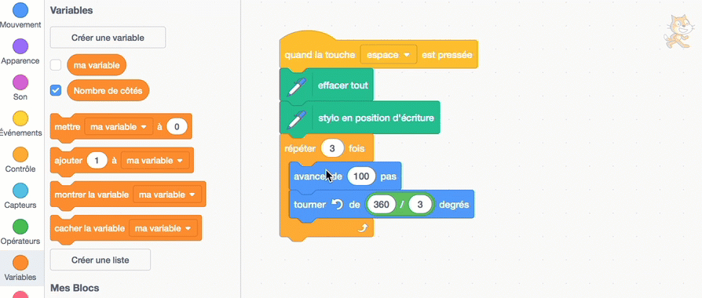
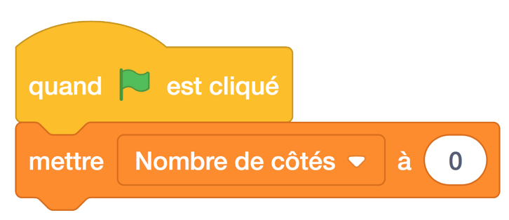
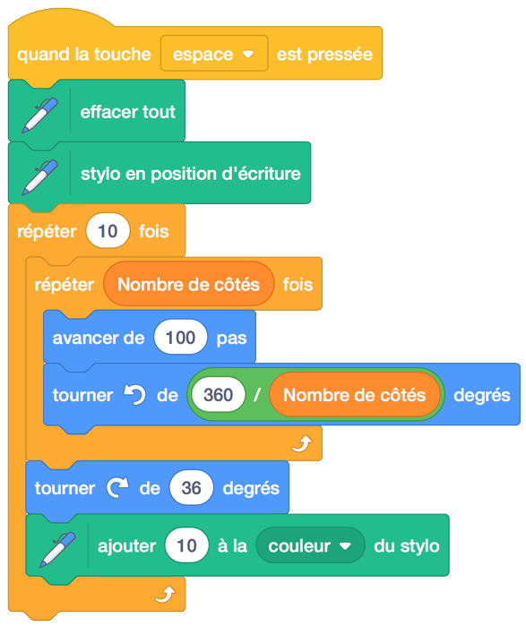
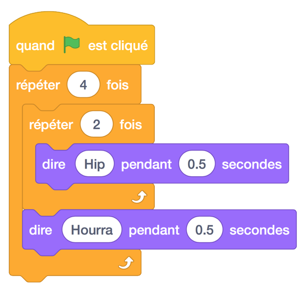

4. Dessiner des polygones - Partie 2 (Variables et boucles imbriquée)¶
Aperçu rapide de la journée
Utilisez des variables pour améliorer le dessin des polygones de la dernière leçon. Refactorisez le code d’hier afin qu’un polygone régulier avec n’importe quel nombre de côtés puisse être dessiné avec le même code. Explorez des formes intéressantes en utilisant des boucles imbriquées (“nested loops”) (une boucle à l’intérieur d’une autre boucle).
-Principes et techniques fondamentaux (PT):
-20IN-PT.1 Appliquer diverses stratégies de résolution de problèmes pour résoudre des problèmes de programmation dans le cours d’Informatique 20. -20IN-PT.2 Se servir de techniques de codage courantes pour améliorer l’élégance de son code et rechercher les causes d’erreurs.
-Fondements de la programmation (FP):
-20IN-FP.1 Se servir de différents types de données, y compris entier, virgule flottante, booléen et chaine pour résoudre des problèmes de programmation. -20IN-FP.2 Faire des recherches sur la manière dont les structures de contrôle affectent le déroulement du programme.
Si vous préférez regarder une vidéo, la vidéo suivante montre les mêmes idées que celles que j’ai décrites dans le texte ci-dessous.
4.1. Variables¶
Lorsque nous avons dessiné une variété de polygones réguliers dans la dernière section, nous avons trouvé qu’il y avait un motif que nous pouvions utiliser, comme le montre l’image ci-dessous:

Le code ci-dessus va dessiner un triangle, et comme nous l’avons découvert précédemment, si nous changeons les deux 3 encerclés en 4, le code dessinerait un carré (polygone à 4 côtés) à la place. Dans cette situation, il serait vraiment agréable d’avoir un moyen de définir facilement la valeur des deux nombres encerclés pour être la même chose. En d’autres termes, il serait bon de pouvoir changer la valeur de 1 pour être 5 et l’autre automatiquement 5. Si nous pouvions le faire, nous pourrions dessiner n’importe quel polygone régulier en changeant simplement un nombre.
Afin de créer un code qui se comporte de la manière décrite ci-dessus, nous devons introduire l’idée d’une variable. Vous avez appris sur les variables en classe de mathématiques. En mathématiques, les variables sont juste des symboles qui peuvent contenir n’importe quel nombre. En informatique, une variable est un contenant qui peut contenir n’importe quel nombre, mais peut également contenir tout autre type d’information (mots, listes de nombres, vidéo, son, etc.). Dans cette situation, tout ce dont nous avons besoin d’une variable à retenir est un nombre.
Pour créer une variable dans Scratch, cliquez sur l’onglet Données, puis sur Créer une variable. Assurez-vous d’utiliser des noms descriptif précis pour vos variables. Par exemple, nombres de côtés serait un nom de variable descriptive utile pour cet exemple.

Après avoir créé une variable, vous verrez maintenant apparaître des blocs dans l’onglet Données. Pour utiliser la variable, faites simplement glisser le nom de la variable dans les emplacements que vous voulez utiliser (dans ce cas, les deux emplacements entourés ci-dessus).
Si vous appuyez sur la touche espace, rien ne se passera. C’est parce que la valeur par défaut de la variable que vous avez créée est 0 (que vous pouvez voir dans le coin supérieur gauche de la scène). Nous devons définir la valeur de la variable comme un nombre utile, comme indiqué ci-dessous:
Maintenant, cliquez sur le drapeau, puis appuyez sur la touche espace. Vous devriez voir le lutin dessiner un carré. Bien que nous ayons réussi à faire en sorte que nos scripts utilisent des variables, il semblerait que cela ne soit pas encore beaucoup mieux que notre version précédente du code.
Pour montrer comment l’utilisation de variables améliore réellement notre code, ajoutons deux autres événements à notre programme, comme indiqué ci-dessous:

Notez que nous utilisons le bloc “ajouté à (variable) x” au lieu de “mettre la (variable) à x”. Cela nous permet d’augmenter ou de diminuer la valeur de la variable, peu importe la valeur précédente. Vous devriez maintenant pouvoir appuyer sur la touche espace pour dessiner un polygone, appuyer plusieurs fois sur les flèches haut/bas, puis appuyer sur la touche espace pour dessiner un polygone différent.
4.2. Les blocs de boucles imbriqués¶
Ajoutons encore une chose à notre programme. Supposons que nous voulions répéter plusieurs fois le polygone. Nous pouvons simplement entourer la partie de notre code qui dessine le polygone dans un autre bloc de répétition. Le code suivant dessinerait le même polygone 10 fois:

Bien que cela répète le dessin du polygone, c’est vraiment ennuyeux. Le polygone est simplement dessiné au-dessus de son emplacement précédent, donc il ressemble à ce qu’il était avant!
En ajoutant un bloc, cependant, nous pouvons rendre ce dessin beaucoup plus intéressant. Ajoutons un autre bloc tournant, à l’intérieur de la répétition 10, mais en dehors du code de dessin polygonal.

Le code ci-dessus va dessiner quelque chose comme le suivant (en supposant que la variable Numbre de côté est 4):

Note
Expérimentez avec les nombres dans la répétition externe (montrée comme un 10), et l’angle de rotation (montré comme un 36). Quelles combinaisons de nombres permettent au lutin de terminer face à la même direction que celle à laquelle il était confronté quand il a commencé à dessiner? Pourquoi?
Vous pourriez trouver intéressant de faire une variable de plus dans votre croquis (peut-être nommé Nombre de formes), et de changer la couleur du stylo à différents endroits dans votre dessin. Adaptez votre code pour ressembler à ceci:
Note
Essayez de déplacer le bloc ajoute __ à la couleur du stylo de sorte qu’il se trouve juste après le bloc avance de 100 pas. À quoi vous attendez-vous que l’image résultante ressemble?
4.3. Check Your Understanding¶
scratch-nested-loops1: Étant donné le code ci-dessous, combien de fois le script ci-dessous indique-t-il “Hip” lorsque vous cliquez sur le drapeau vert?
scratch-nested-loops2: Étant donné le code ci-dessous, combien de fois le script ci-dessous indique-t-il “Hourra” lorsque vous cliquez sur le drapeau vert?
4.4. Problème de pratique¶
Travaillez sur votre première affectation Scratch, pour le temps restant.
Note
Si votre enseignant ne vous a pas assigné de projet, vous pouvez envisager de créer une nouvelle histoire pour mettre en pratique vos compétences Scratch. Veillez à utiliser des émissions, des blocs de répétition et des blocs si-alors.